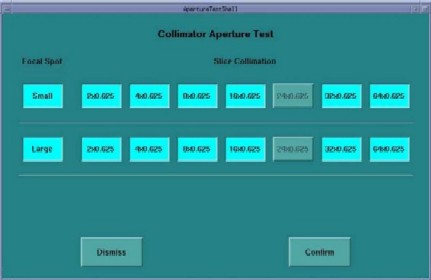
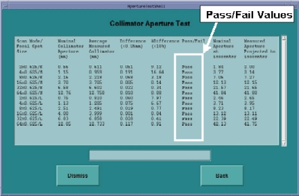

Operating Documentation
Direction 5193574-800, Rev# 22
LightSpeed 7.X Service Methods
Module Version 2.0, Version Date 4/21/09
Operating Documentation |
| Required Persons | Preliminary Reqs | Procedure | Finalization |
|---|---|---|---|
| 1 | Not Applicable | 15 mins | Not Applicable |
This module explains how to run the “Collimator Aperture Test” procedure, which performs a scan at each aperture and compares the average collimator aperture against a nominal aperture for that scan mode. All data collections and calculations are performed with Z-Axis Tracking On.
The average collimator aperture is compared to the Nominal collimator aperture. The Tech Ref manual states that the FWHM of the Dose Profile has a “maximum deviation” of ±30% or 1.5 mm, whichever is greater, and an “expected deviation” of ±10% or 0.5 mm, whichever is larger [Quality Assurance chapter]. This is measured at iso center. At the collimator, this would correspond to an “expected deviation” of ±10% or 0.15mm, whichever is larger. The current Collimator Calibration design has an internal check on the target collimator aperture of 0.25 mm versus a nominal aperture. For this Collimator Aperture Test, the test Passes if the difference between the measured aperture and the nominal aperture is less than ±10% or 0.25 mm, whichever is larger. This will ensure that the measured aperture is within the designed limits.
The "at isocenter" values are calculated. This is an approximation of the Full Width Half Max (FWHM) value or beam width at ISO center. For Dose Profile this report should match Polaroid file measurements.
| Last Revised | 15 January 2009 |
| Condition | Reference | Effectivity |
|---|---|---|
Before beginning this procedure, please read the gantry general safety information.Safety>Equipment Service-Gantry | - | - |
Move the table away from the gantry and remove any objects from the Detector Field of view.
On the console select the [DIAGNOSTICS] tab in the Common Service Desktop.
Launch the [COLLIMATOR APERTURE TEST]. Refer to Illustration 1 for the layout of the tool interface.
Select the desired combinations of focal spot size and slice collimation. The default is all ON or selected. If none of the buttons are selectable, then Collimator Calibration may not have been performed or the files are not available. Click [CONFIRM].
The [START SCAN] button on the SCIM will begin flashing. Press the [START SCAN] button to begin running the collimator aperture tests.
The tool will let you know if it passes. An example of the test results is shown in Illustration 2. The various cam positions are recorded and can be used to evaluate the beam aperture during scanning.
If the tests do not pass then perform Collimator Calibration. If the tests still do not pass then troubleshoot or replace the collimator.
Illustration 1: Collimator Aperture Test GUI

Illustration 2: Collimator Aperture Test Results

No finalization steps.